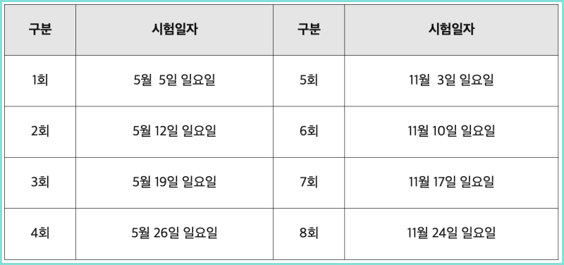

- 운전면허(완료)
- 컴활 2급(완료)
- 아이엘츠
- 무역영어 1급
- 코딩
- 웹디자인
무역영어
무역영어는 무역의 전반적인 지식과, 영어 용어로 시험을 보는 무역의 가장 대표적인 자격증임.
공부 순서
- 유튜브 정문영 무역강의 26강 하루에 1강씩 듣고 개념 익히기. 모르는 단어는 인터넷에 찾아보면서 강의 보기.
- 내가 갖고 있는 교재 하루에 1시간씩 꼼꼼히 읽고 다음날 안 읽은 곳부터 읽기.
- 컴퓨터 바탕화면에 무역영어 단어 하루에 1시간, 총정리 1시간씩 읽기
- 정문영 무역강의 26강 다 들으면 무영영어 교재에 모의고사 1시간씩 풀기(모르는 개념 익히면서)
시험일정
